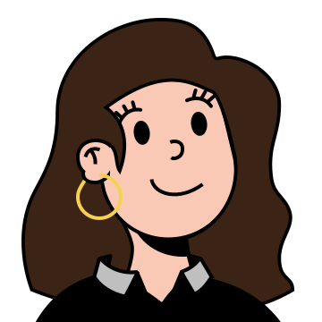
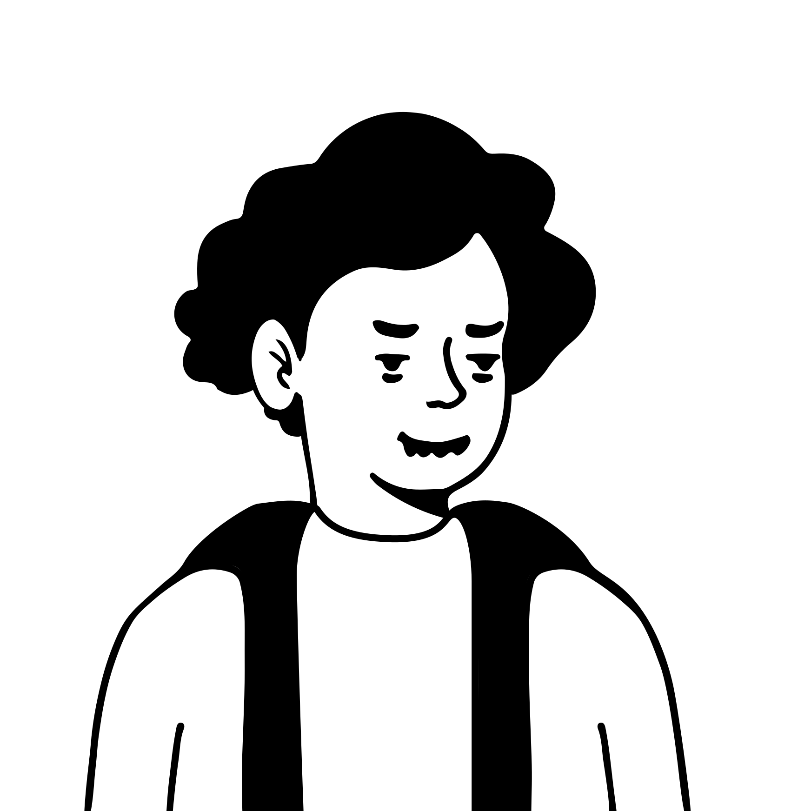
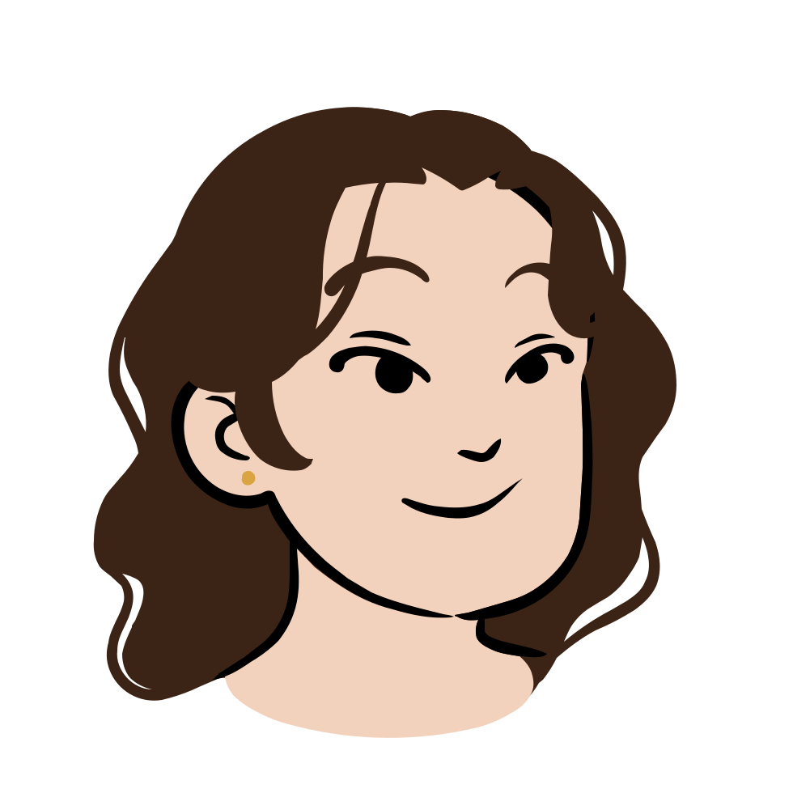

Character options
Number 1 is on the site now. Tell me a number to switch. All six are free to use on a portfolio.



Number 1 is on the site now. Tell me a number to switch. All six are free to use on a portfolio.


